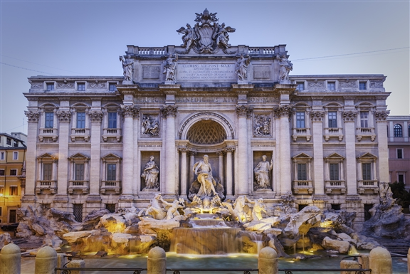
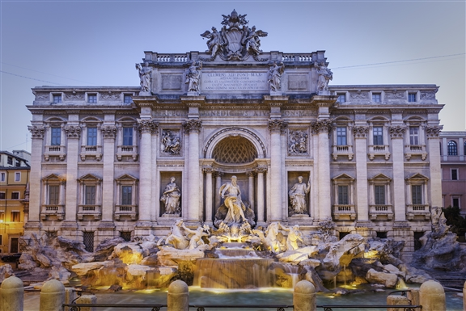
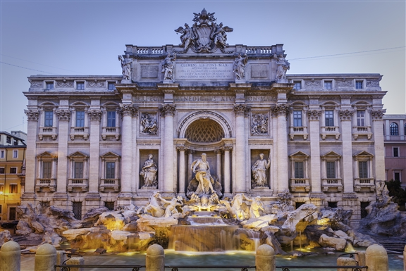
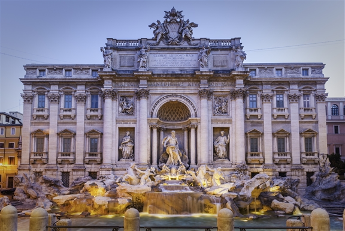

 

Rome, Italy’s capital, is a sprawling, cosmopolitan city with nearly 3,000 years of globally influential art, architecture and culture on display. Ancient ruins such as the Forum and the Colosseum evoke the power of the former Roman Empire. Vatican City, headquarters of the Roman Catholic Church, has St. Peter’s Basilica and the Vatican Museums, which house masterpieces such as Michelangelo’s Sistine Chapel frescoes.
Places to Visit |
Origin |
Type of Attraction |
| The Colosseum and the Arch of Constantine | Ancient Roman times | Colosseum |
| Sistine Chapel | 16th Century | Chaperl, Art Gallery |
| St. Peter's Basilica | 16th Century | Basilica |
| Trevi Fountain | 18th Century, Roman Baroque | Fountain |
| Plazza Navona | 15th-17th Century Renaissance period | Square/Town |
| Pantheon | Ancient Roman times | Temple |
There are many areas in Rome with classic and authetic dishes that everyone can enjoy. In additions to eating in at restaurants, vistors and toursits can further explore the food here by shopping at open markets, visit taste testing events, and even attend culinary courses to understand how iconic dishes are created. Click on the image to look into the possibilties of food in Rome!
Museums in Rome hold their culture and history. There are many sites such as Vatican City, the Sistine Chapel, and more that include paintings, statues, murals, and architecture. Mnay of these places are picture worthy and people can even further understand the history of Rome through tour and museum guides. Cick on the image to see what attractions and museums are available in Rome.